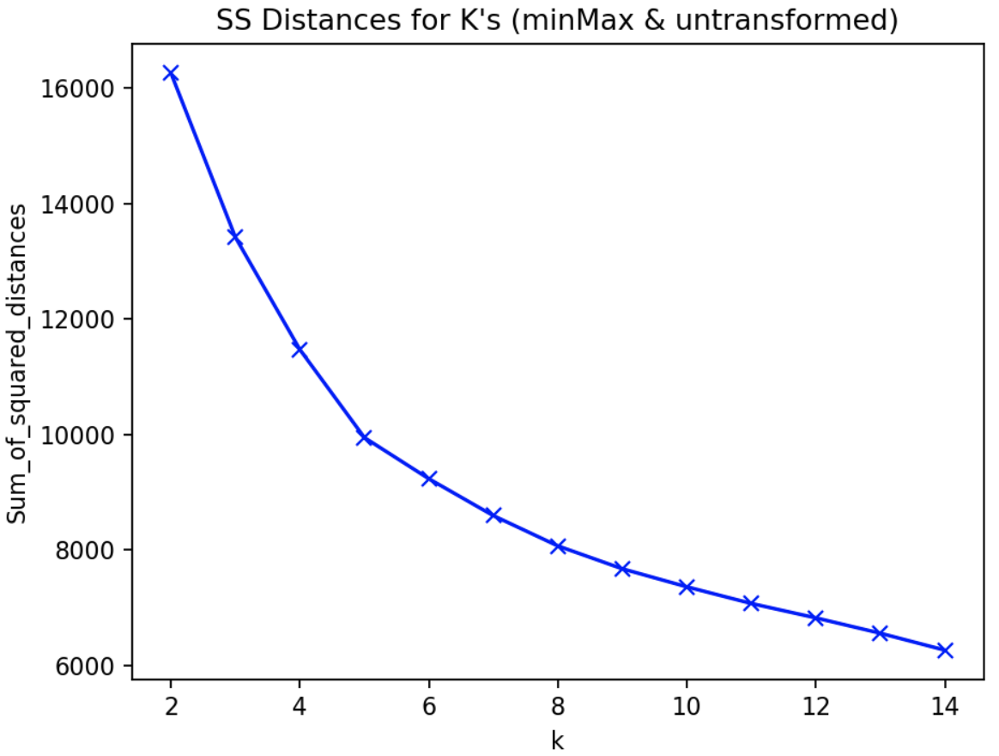
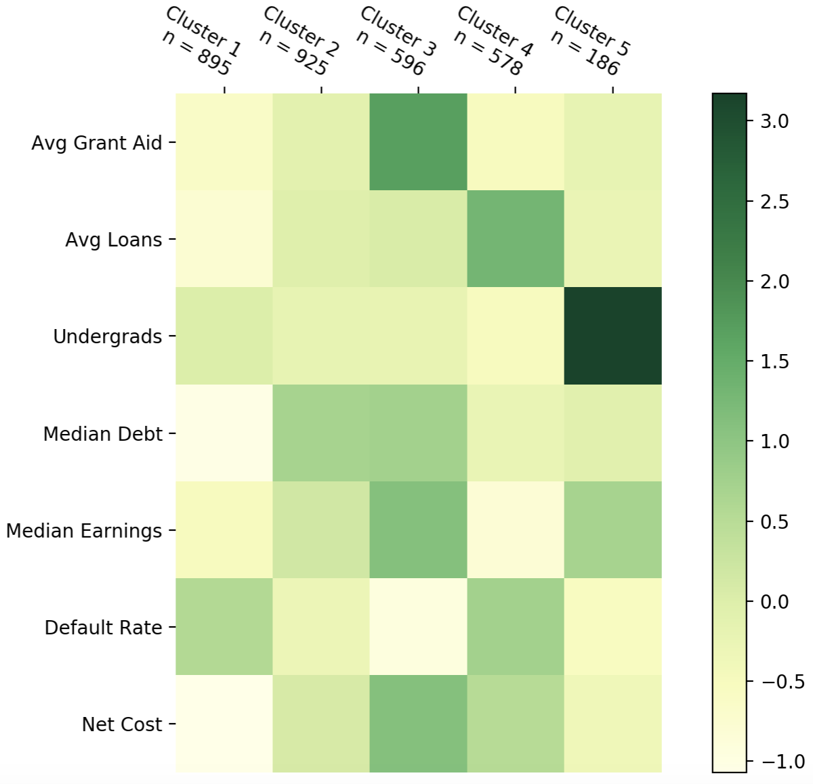

As the end of my Analytics
program fast approaches, I start feeling the graduate program version of the "Sunday scaries".
However, these are not caused by capstone projects, finding a full-time job, or even the threat of another Chicago winter. This is a fear that haunts
71% of all university graduates nationwide--student loans.
Student loans seem like a concept that is as old as time itself. It's not difficult to
picture Aristotle logging onto Fedloan to complete his FAFSA, or Confucius checking NerdWallet
to a find a list of the best private lenders, but student lending is a rather novel concept.
Early in United States history, colleges and universities did not charge tuition, or had very low
rates. The biggest cost of getting an advanced degree was moving and living expenses. This led to
colleges mostly made up of students from wealthy families.
This all changed in the 1920s with the roaring economy. Suddenly, the cost of college was within
reach even if your last name wasn't Rockefeller. By the end of the 1920s, 20% of college-aged
Americans would enroll in higher education.
The middle of the century saw the government prioritize access to higher education for an even wider group
of people. It started with the GI Bill, which guaranteed free college or vocational school for veterans
after World War II. Then, 1965 saw the passing of the Higher Education Act, which helped lower income
students afford college when they wouldn't be able to on their own. This also marks the first time the federal
government administered student loans, and helped establish many of the financial aid programs that we know today.
These government programs caused attendance at colleges to sky rocket. In the decade after the passing of
the Higher Education Act, attendance at public colleges more than doubled. The increase in attendance caused
the government grant money to get spread very thin. This is where we start to see a rush of students taking
out loans to pay for their advanced degree, a degree which was becoming more and more normalized in the work force.
Starting in the mid 1970s, college tuition started to increase at a faster rate than the rest of the economy.
This trend could partially be attributed to the demand for higher education exceeding the supply, but it certainly
was worsened by the huge state funding cuts to higher education that began in the 1980s and have essentially
remained until this day.
In 1986, students had racked up $10 billion dollars in student loans. Let's take a look at where we stand today.
This mountain represents the currently $1.6 trillion dollars of existing student debt
This seems like an unimaginable amount of money
So how did we get here..?
This is the average price of tuition in the United States at public and private schools since 1988
This line represents the maximum Pell Grant awarded to students
As you can see, the Pell Grants have failed to keep up with rising tuition, which causes
people to take out more in loans to make up the difference
This is the amount of money government has spent on higher education per full-time student
As with the maximum Pell Grant awarded, government funding for higher education has completely
plateaued for the last three decades
Government funding getting slowly cut off from higher education has led to colleges scrambling
find funding from other sources. Tuition increases are an easy way to shift the burden
onto the student. A college degree has become essential to find a well-paying job in the
modern work force, as almost every job created since the recession went to a college graduate.
This gives colleges huge leverage over students to charge essentially any price they want.
Another source of school funding can be philanthropy. Colleges will gladly accept money from private
citizens, foundations or corporations. If you give enough, they might even
let you put your name on a building (check out the Northwestern Pritzker School of Law or Carnegie Mellon University). If you'd
like your own naming rights, you can can find Northwestern's handy guide here.
While naming rights to a building or bench my seem innocuous enough, decreased government funding
for higher education means colleges are more desperate for this money, which can lead
to them being held captive by the ideologies of their donors. John M Olin and the Koch brothers
are among the most prominent of America's elite to realize they could use college philanthropy to their political advantage.
Founding entire college departments and hiring professors preaching corporation friendly
ideologies, even creating a new approach to jurisprudence called "Law and Economics", these billionaires have been able to launder their interests through respected universities.[1]
Yet another way for colleges to bring in cash is through investing.
An endowment is essentially how much money a college has in the bank. It gets there either
through donations or other funding sources, but arguably the more important part is how it's
spent (or not). Over 100 US universities currently have an endowment of over a billion dollars[2] .
Northwestern University currently has a $11.1 billion endowment, and Harvard, of course, leads the way
with a $38.3 billion in the bank. This money, and the returns it generates, can be used for financial aid programs, new facilities,
or athletics, but more often it's just reinvested back into the endowment to make even more money
for the next year.
This may seem fine, and in a vacuum, it is! Endowments are often thought of as a sort of rainy day fund
for colleges. Some extra money to get them through a major recession or an unexpected cut in funding.
However, more and more, universities are obsessed with maintaining their endowment's value at all costs.
And I mean that quite literally. Yale has spent $480 million in one year to pay private equity fund managers
to manage their endowment. Compare that to the $170 million that was given to their students in the same
year in the form of tuition assistance, fellowship and prizes[3].
You can see why some people call large universities banks with an education wing.
One could reasonably believe that a college is free to do with its endowment as it wishes, and if
they wish to hoard all of this wealth, then that's their business. But the reality is that this entire
endowment system is heavily subsidized by taxpayers. So this stock-piling of assets, where the largest returns are going
to hedge fund managers rather than students is happening at a cost to the all of us. For elite private
universities, the average taxpayer subsidizes $13,000 per student per year, while at prestigious public
universities, the average subsidy is closer to $23,000 per student per year. Princeton leads the way with $105,000
of taxpayer subsidy per student per year[4].
Despite all the money these elite universities pay for investors to handle their endowment, it's not quite
clear how good the investors actually are at their job. Not a single Ivy League endowment beat the returns of a simple
40-60 portfolio (40% stocks, 60% bonds) in the 10 years since the 2008 recession [5]
But do tuition increases, which come in the wake of shrinking government funds and endowment hoarding,
really affect students post graduation? They still get an advanced degree which they can use to land a great job in exchange for this huge
debt burden. So what's the problem here?
One in seven Americans owes a portion of that giant mountain of debt you saw in the beginning. That's 44 million
people. And out of those people, 5.1 million of them are in default [6] . Let's take a look at
how that compares to rates of default for other debt around the housing crisis.
Here's what the rate of default on mortgages was in the United States from 2003 to 2017
The rate peaked around 8% in the middle of the recession, but have since leveled off to approximately their
levels before the recession
The rate of default on credit cards was even worse
However credit card default rates are almost always higher than mortgages, and they also returned to normal post-recession
Here are the default rates for auto loans and revolving debt
Finally, let's look at the rate of default on student loan debt
Not only is this rate currenly past the rate of default during the peak of the housing crisis...
...the default rate has never gone down, even post-recession
How high can it go?
What will this graph look like if there's another recession?
This is a $1.6 trillion dollar crisis that we can no longer ignore. Although we
don't know what this crisis is going to look like in the future, we know that defaulting
or even the threat of defaulting on student loan debt is causing students to alter huge
life decisions.
People get an advanced degree in order to gain increased flexibility in their careers.
More jobs are willing to hire you with an advanced degree. The connections you make in a few years at college would
take most people a lifetime to make in the work force. Higher education can open more
doors for you right out of high school than essentially any other career path can. But
how many is it closing?
As the student debt burden continues to climb, which life choices is pursuing an
advanced degree making for you? [7]
10% of people said student debt has kept them from having a baby when they wanted
20% of people haven't been able to change jobs because of their student debt burden
30% have delayed saving for retirement
Nearly half of survey respondents said their student debt prevented them from buying a home
Delaying children, staying in a job you don't like, continuing to rent an apartment when you'd rather own a home, and
paying back student debts when you'd rather be starting a nest egg. The enormous weight of student debt has pushed itself
into nearly every facet of life.
While op-ed columns love pointing out how millennials are "killing" the real estate industry, or relationships, or the auto industry
, it seems quite obvious that this has less to do with youthful arrogance or spite for an economy that boomer's built
than the simple fact that milliennials don't seem to have much spending power. At least compared to generations that came before [8].
And while student debt can impact the life choices of everyone, women and people of color are especially hard hit.
There are thousands of colleges in the United States, are they all contributing to the debt
crisis at the same rate? What traits do these colleges have that distinguish them from each
other in terms of debt? These were the questions I sought to answer in my final analysis.
First, I created a dataset using the College Scorecard, which is a tool the US government created
to help students compare colleges in key metrics. The metrics I decided would most apply to
this debt study were average grant aid awarded, average loans awarded, number of undergraduate
students, median debt after graduation, median earnings 10 years after graduation, the default
rate for students within 3 years of graduation, and finally the average net cost of the school (sticker price minus average aid).
Using the K-Means clustering method in Python, I created an elbow plot to decide how many clusters to
add to my analysis. The y-axis here tells us the sum of squared distances between the individual points to the
center of the clusters they're assigned to. The x-axis tells us how many clusters were created. Adding additional
clusters will always decrease the sum of squared distances, but too many clusters creates clusters that are less practical or
intuitive, and could potentially be "overfitting" the data. Choosing the number of clusters is more art than
science, but five clusters for this dataset seems to be the point were the benefit
from adding additional clusters seems to become marginal. Five clusters also gives us fairly even cluster
sizes, which is ideal.

Now let's take a look at the cluster heat map, and see if we can interpret what these clusters
represent.
Cluster 1 schools have low cost and low median debt, but their default rate is tied for highest
among the clusters. A lot of cluster 1 schools are community colleges or tech schools. Examples
include Illinois Valley Community College, North Georgia Technical College and New Mexico Junior
College. We can generalize and call these "trade schools".
Cluster 2 schools are pretty average across the board except they typically have the highest debt.
Examples of cluster 2 schools are the Art Institue of Seattle, Chicago State University and Prarie
View A&M University. This cluster is difficult to name because it's the biggest and encompasses the
widest variety of schools, but let's call these "mid-level regional colleges".
Cluster 3 schools have the highest costs and highest median debt, but also receive the highest earnings,
get the most financial aid and have the lowest default rate. These tend to be very prestigious and
expensive schools populated with wealthy students that can typically afford to pay back the debt. Examples
of these schools are Northwestern University and all of the Ivys. We'll call this cluster "elite universities"
Cluster 4 schools seem to be the most dangerous schools in terms of student loans. The cost is above average,
they take out the most loans by far, and the default rate is also quite high. This is combined with the
lowest average earnings among the clusters. Examples of these schools are the Southwest Institute of Healing
Arts, Commonwealth Institute of Funeral Service, and the Art Institue of Indianapolis. Let's call these "high risk schools".
Finally, cluster 5 are mostly the giant state schools. They have by far the highest attendance, but they
make up for it with pretty high earnings, and fairly low cost and default rate. Examples of these schools
are Purdue University, the University of Wisconsin, and Ohio State University. We'll just call these "large public colleges"

Now that we know a bit about these clusters, let’s explore them more in depth in a less static way.
I’ve created a bubble below for every school in the college scorecard dataset. You can hover your
mouse over them to see their cluster attributes.
Let’s see what they look like when they’re organized by their clusters.
As we already knew, the clusters are about evenly split except for the 5th one. Feel free to hunt
around for a school that is meaningful to you, but first let me highlight a few that are of interest.
This red dot is the University of Wisconsin. It’s where I went to undergrad. They’re a very large
public university with a low cost and high relative earnings. This leads to a very low default rate
of 1.6%. All of these attributes are characteristic of this cluster.
This purple dot is Northwestern University, where I’m currently attending graduate school.
Northwestern is included in the cluster that I call “elite colleges”. They typically have a
higher cost and higher debt than other schools, but they make up for it by giving out much more
grant aid (median of $38,500 vs UW’s median grant aid of $6,500) and graduate students with higher earnings.
The Ivy League schools are probably the most classic examples of this cluster
Here is every college in Illinois. As you can see, this is a diverse group. Here
you’ll find everything from large public schools like the University of Illinois
to the much smaller operations like McHenry County College.
You can get a sense for the attributes of each cluster by hovering your mouse over the
schools in each one, but perhaps a better way to actually use some size and color
This is what it looks like when the size of the bubbles correspond to the size of the
undergraduate populations at the schools. It’s no surprise that the 5th cluster has most
of the massive schools. But let’s instead size these bubbles using a measure that has
to do with the debt crisis.
Now the bubbles are sized by the median debt a student has coming out of college. It’s
pretty easy to see that the schools with the most debt fall into clusters 2 and 3. Let’s
bring in another variable we haven’t seen before to help explain this phenomenon.
Here the clusters are colored by type of school. Although cluster 2 is a mix, clusters
1 and 5 are dominated by public schools, while 3 are overwhelmingly private non-profits
and 4 are majority private for-profits. But as we saw in the heat map above, a large
amount of debt does not alway correlate to a high chance of defaulting. Let’s color the
bubbles based on the average default rate for students.
This tells the same story. Although the elite universities in cluster 3 have some of the
highest debt out of college, their default rates are some of the lowest. While students
attending the trade schools and for-profit colleges in clusters 1 and 4 have extremely
high rates of default. We already know two of the reasons this may be based off our analysis
Students at elite universities get much more aid than students at other schools
And cluster 1 and 3 schools have by far the lowest median earnings
When we color the bubbles by gender of the student body, a couple trends stand out. First, a lot of these
schools in general tend to hover around 40% men. This lines up with recent trends in higher ed. But second,
a lot of the high risk schools in the fourth cluster are more than 80% women.
Coloring the bubbles to look at the proportion of black students in these schools, we see this pattern stand out
even more. Almost all of the predominantly black colleges are in clusters 2 and 4. Aside from Howard and Spelman, the elite colleges and large public schools,
the ones with the best earning prospects and lowest risks of default, are dominated by non-black students.
Whatever your situation is, whether you're a prospective college student or mid-career professional that has yet
to see their principal go down. Whether you're graduating next to me with six figures of debt or you already have your debt paid off,
please know that this 👏 is 👏 not 👏 normal 👏.
This system is not normal.
The UK has a similar student debt problem, but their tuition is capped at £9,000 a year. In Germany, tuition has been
completely abolished. In fact, there are more than 40 countries around the world that offer free public higher education
including Finland, Sweden, Norway, Greece, Brazil and Turkey. Study at any of these schools (and some even offer programs in English)
and all you're expected to pay is your cost of living.
This is not to say that the United States education system is homogenous. As we've seen, your financial situation after leaving
college can vary widely. Going to an elite school will cost you more, but you're unlikely to feel as much of a pinch
post-graduation as a person that enrolled in a relatively inexpensive trade school. And regardless of what school you attend,
women and people of color are the most effected by debt across the board.
So what can be done about this besides enrolling in a Greek college? As US tuitions continue to rise, know that something can be
done to address this, but the powers at be simply choose not to. We are going on three decades of public school funding cuts that
have not only left our colleges and universities desperate for corporate cash and private donations, but have also devastated
our K-12 system. We also have giant universities that act as if they're banks or real estate companies, stock-piling cash and
gobbling up property instead of reinvesting in their students.
As we look towards the future of the US higher education system, we need to ask ourselves, do we consider education a human right?
Should access to a proper education depend on you or your family's financial situation? How long can we continue to allow the
country's elite to launder their wealth and privilege into a degree at a prestigious school, while the working class goes into
debt after getting a technical degree? The United States of America, the wealthiest country in the history of the world, needs
to guarantee a tuition and debt free higher education to anybody that wants it.
So to all those that plan on graduating this year, including all of my classmates, congratulations. We've earned every ounce of
that diploma, and we'll all move on to bigger and better things. Wonderful opportunities and career paths. Unfortunately, we also need
to join the other 44 million Americans feeding that giant mountain of debt. Because now, it's payback time.